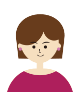

HOME
HOME
About

後 藤 友 美
創造社デザイン専門学校卒（2001年）
2001年04月〜2003年06月
- 株式会社対策室トライシステム事業部＿正社員
- 主に紙媒体制作のクライアント打合せ〜入稿まで
- スポーツメーカー販促ツールデザイン（ポスター、パンフレット、店頭POP）
- 企業ロゴ・会社案内デザイン
- 自社主催イベント企画・運営、ポスターなどツールデザイン
- 自社webサービススタートアップにてPR担当、バナー・コンテンツデザイン、メルマガ作成
2003年07月〜2005年12月
- AZビジコム株式会社＿正社員
- 主に紙媒体制作のクライアント打合せ〜入稿まで
- 女性下着メーカー販促ツール（パンフレット）、イベント冊子デザイン
- 家電メーカーPOPデザイン、サイトバナーデザイン
2006年01月〜2011年03月
- 結婚・出産・育児
2011年04月〜2014年08月
- TAU GRAPHIC＿アルバイト
- 主に紙媒体制作のデザイン
- 地域フリーペーパー紙面・広告デザイン
- 介護定期冊子の特集イラスト
- 商品ロゴ
- 自社商品イラスト
- 自社サイトのブログ、商品撮影、商品企画、ライティング
2014年09月〜2021年01月
- 株式会社アルファウェイ＿パート
- 主に自社商品webサイト更新、新規デザインと販促ツールのデザイン〜入稿まで
- ブランドサイトの更新、新規デザイン
- モールサイト（楽天・Yahoo・Amazon）更新、新規デザイン
- 販促ツールデザイン
- ロゴ制作
- モールサイト管理
- LPデザイン
- 制作進行管理・スタッフ教育
- 社内業務マニュアル作成・営業用資料作成・提案資料作成
- メルマガ作成
2019年04月〜2020年03月
- 株式会社Balance＿業務委託
- 主に外注指示・資料作成
- 大学イベント用ツール作成、webサムネール作成
- 大学サイト更新外注指示
- 大学病院サイトリニューアルプロジェクトにて外注指示、マニュアル作成、確認業務
- 新規提案用ワイヤーフレーム作成
- web用画像リタッチ
- LPデザイン
- 大学サイト更新作業